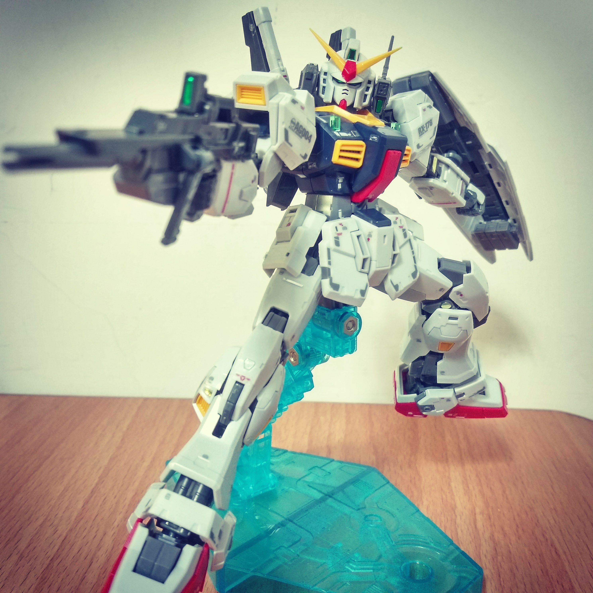
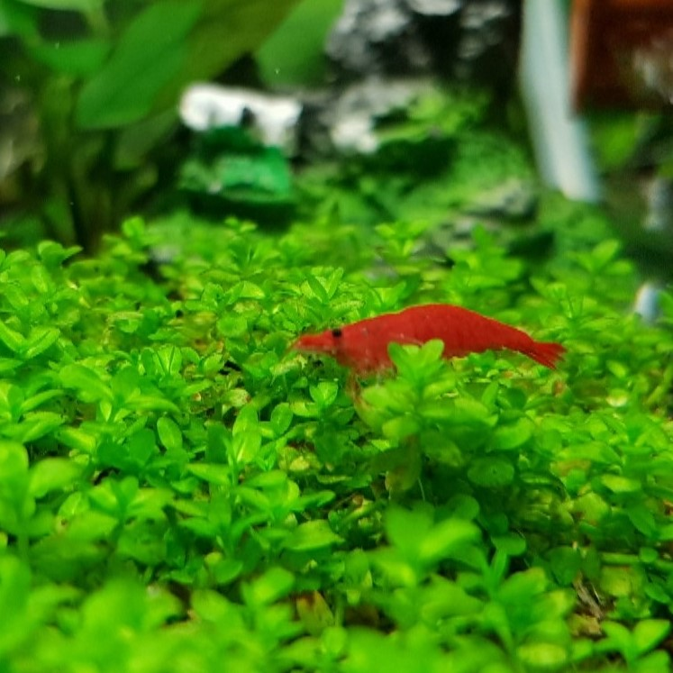

Polun0122
My github site
Click me
My hobby
Baseball & Softball
Plastic modeling
Aquarium


Education
National Central University, Taiwan, 2022
主修: Department of Mechanical Engineering
第二專長: 資訊工程程式設計
Taoyuan Senior High School, Taiwan, 2018
普通科
Personality
【簡單介紹】
喜歡打棒壘球、模型組裝、水族飼養。興趣對我來說是生活的調適、也是生活中寶貴經驗的來源。在棒壘球運動中，團體的運動使我了解到獨善其身並不能讓團隊成功，唯有互助合作方能邁向勝利。模型組裝培養我的耐心與細心，即便是小細節若是沒有達到目標只能修正後再重新來過。能動能靜的興趣造就我在生活中面對失敗無所畏懼。
【團隊合作】
作為團體的一員，我能夠負責任地完成分內的工作，不去造成他人負擔。
作為團體的領導者，我能夠清楚目標在何處，思考正確的方向，並且與團隊並肩作戰。
我曾在高中與大學兩度擔任球隊隊長。作為隊長，除了帶大家往勝利前進，更重要的是透過換位思考，我能夠了解大家的瓶頸與失敗的挫折感。藉由鼓勵與懲罰並進，讓團隊凝聚向心力，同時解決既有的問題。強大的求勝心下，勝利的滋味更是甜美。
Contact Information
Email: sample@gmail.com
Phone: +886 912345678